GridView의 툴 팁 표시 예제입니다. 이 기능은 아래의 속성으로 사용할 수 있습니다. - tooltipDisplay : 전체 데이터가 셀에 모두 표시되지 않는 경우 마우스-오버 시 툴팁으로 데이터를 표시할 지 여부. - tooltipDisplayColumn : 특정 컬럼만 tooltip이 표현되도록 설정. - tooltipShowAlways : 툴팁을 항상 표시. - tooltipShowAlwaysColumns : 툴팁을 항상 표시할 컬럼을 지정. - tooltipHeader : 헤더에 전체 데이터가 셀에 모두 표시되지 않는 경우 마우스-오버 시 툴팁으로 데이터를 표시할 지 여부. - tooltipHeaderShowAlways : 항상 툴팁을 표시할 지 여부.
Tooltip 기능은 마우스의 over/out 이벤트로 구현된 기능입니다.
마우스를 사용할 수 있는 환경에서만 정상 동작 합니다.
전체 데이터가 출력되지 않는 셀만 툴팁으로 데이터 표시하기
모든 셀에 데이터 툴팁을 항상 표시하기
지정된 컬럼의 전체 데이터가 출력되지 않는 셀만 툴팁으로 데이터 표시하기
지정된 컬럼의 셀에 데이터 툴팁을 항상 표시하기
GridView의 셀에 전체 데이터가 표현되지 않는 경우 말줄임표(...)가 표시됩니다. 데이터가 표현되지 않는 셀만 툴팁이 표시됩니다.
영역 [전체 데이터가 출력되지 않는 셀만 툴팁으로 데이터 표시하기]의 GridView를 확인합니다.
[브라우저(Chrome) 실행 예시]
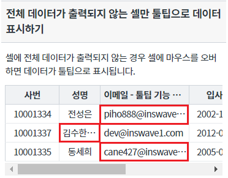
2번째 행의 컬럼 '성명'에 마우스를 오버합니다.
셀의 전체 데이터가 툴팁으로 표시됩니다.
말줄임표가 표시된 셀만 툴팁이 표시됩니다.
[브라우저(Chrome) 실행 예시]
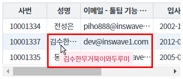
1번째 행의 컬럼 '성명'에 마우스를 오버합니다.
셀에 전체 데이터가 출력되어 툴팁이 표시되지 않습니다.
[브라우저(Chrome) 실행 예시]
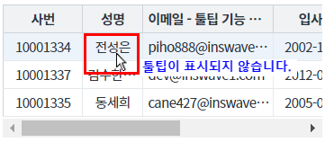
GridView의 셀에 전체 데이터가 표현되지 않는 경우 말줄임표(...)가 표시됩니다. 모든 셀에 툴팁이 표시됩니다.
영역 [모든 셀에 데이터 툴팁을 항상 표시하기]의 GridView를 확인합니다.
[브라우저(Chrome) 실행 예시]
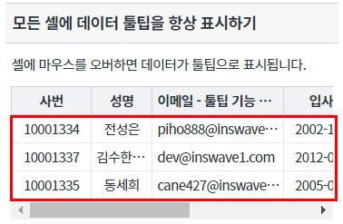
1번째 행의 컬럼 '성명'에 마우스를 오버합니다.
모든 셀에 툴팁이 표시됩니다.
[브라우저(Chrome) 실행 예시]
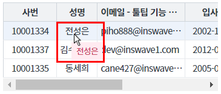
GridView의 셀에 전체 데이터가 표현되지 않는 경우 말줄임표(...)가 표시됩니다. 지정된 컬럼 '성명' 셀의 전체 데이터가 표현되지 않는 경우에만 툴팁이 표시됩니다.
영역 [지정된 컬럼의 전체 데이터가 출력되지 않는 셀만 툴팁으로 데이터 표시하기]의 GridView를 확인합니다.
[브라우저(Chrome) 실행 예시]
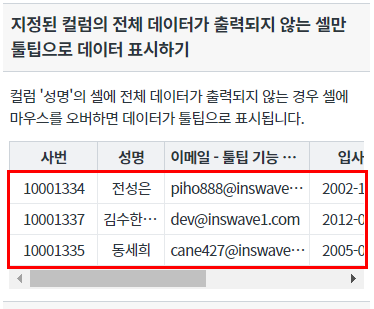
2번째 행의 컬럼 '성명'에 마우스를 오버합니다.
툴팁이 표시됩니다.
[브라우저(Chrome) 실행 예시]
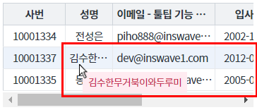
1번째 행의 컬럼 '이메일 - 툴팁 기능 테스트 용도'에 마우스를 오버합니다.
툴팁이 표시되지 않습니다.
[브라우저(Chrome) 실행 예시]
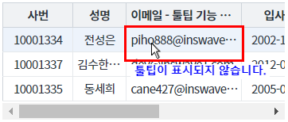
GridView의 셀에 전체 데이터가 표현되지 않는 경우 말줄임표(...)가 표시됩니다. 지정된 컬럼 '성명' 셀에 툴팁이 항상 표시됩니다.
영역 [지정된 컬럼의 셀에 데이터 툴팁을 항상 표시하기]의 GridView를 확인합니다.
[브라우저(Chrome) 실행 예시]
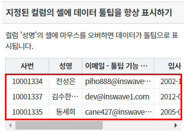
1번째 행의 컬럼 '성명'에 마우스를 오버합니다.
모든 셀에 툴팁이 표시됩니다.
[브라우저(Chrome) 실행 예시]
2번째 행의 컬럼 '성명'에 마우스를 오버합니다.
툴팁이 표시됩니다.
[브라우저(Chrome) 실행 예시]
GridView의 속성을 정의합니다.
[필수] tooltipDisplay="설정값" //[default: false, true] 전체 데이터가 바디 셀에 모두 표시되지 않는 경우, 마우스-오버 시 툴팁으로 데이터를 표시.
예시) tooltipDisplay="true" //툴팁 사용
[선택] tooltipHeader="설정값" //[default: false, true] 전체 데이터가 헤더 셀에 모두 표시되지 않는 경우, 마우스-오버 시 툴팁으로 데이터를 표시.
예시) tooltipHeader="true" //툴팁 사용
그림 1.웹스퀘어5 SP5 스튜디오의 Property View(속성창) 예시
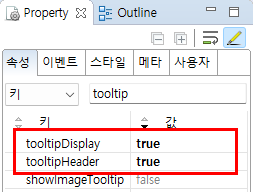
[소스 코드 예시]
<!-- gridView 의 소스 본문 예시 --> <w2:gridView tooltipDisplay="true" tooltipHeader="true" dataList="data:dlt_member" style="height: 100px;"> <!-- 중략 --> </w2:gridView>
GridView의 속성을 정의합니다.
[필수] tooltipDisplay="설정값" //[default: false, true] 전체 데이터가 바디 셀에 모두 표시되지 않는 경우, 마우스-오버 시 툴팁으로 데이터를 표시.
예시) tooltipDisplay="true" //툴팁 사용
[필수] tooltipShowAlways="설정값" //[default: false, true] 항상 툴팁 사용
예시) tooltipShowAlways="true" //툴팁 항상 표시 사용 - 바디의 셀
[선택] tooltipHeader="설정값" //[default: false, true] 전체 데이터가 헤더 셀에 모두 표시되지 않는 경우, 마우스-오버 시 툴팁으로 데이터를 표시.
예시) tooltipHeader="true" //툴팁 사용
[선택] tooltipHeaderShowAlways="설정값" //[default: false, true] 헤더 셀에 항상 툴팁 사용
예시) tooltipHeaderShowAlways="true" //툴팁 항상 표시 사용 - 헤더의 셀
그림 2.웹스퀘어5 SP5 스튜디오의 Property View(속성창) 예시
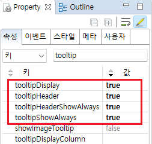
[소스 코드 예시]
<!-- gridView 의 소스 본문 예시 --> <w2:gridView tooltipDisplay="true" tooltipShowAlways="true" tooltipHeader="true" tooltipHeaderShowAlways="true" dataList="data:dlt_member" style="height: 100px;"> <!-- 중략 --> </w2:gridView>
GridView의 속성을 정의합니다.
[필수] tooltipDisplay="설정값" //[default: false, true] 전체 데이터가 바디 셀에 모두 표시되지 않는 경우, 마우스-오버 시 툴팁으로 데이터를 표시.
예시) tooltipDisplay="true" //툴팁 사용
[필수] tooltipDisplayColumn="컬럼ID" //특정 컬럼만 tooltip이 표현되도록 컬럼명을 지정.
예시1) tooltipDisplayColumn="EMP_NM" //컬럼 'EMP_NM'에 툴팁 사용
예시2) tooltipDisplayColumn="EMP_NM,EMAIL" //컬럼 'EMP_NM', 'EMAIL'에 툴팁 사용
그림 3.웹스퀘어5 SP5 스튜디오의 Property View(속성창) 예시
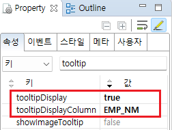
[소스 코드 예시]
<!-- gridView 의 소스 본문 예시 --> <w2:gridView tooltipDisplay="true" tooltipDisplayColumn="EMP_NM" dataList="data:dlt_member" style="height: 100px;"> <!-- 중략 --> </w2:gridView>
GridView의 속성을 정의합니다.
[필수] tooltipDisplay="설정값" //[default: false, true] 전체 데이터가 바디 셀에 모두 표시되지 않는 경우, 마우스-오버 시 툴팁으로 데이터를 표시.
예시) tooltipDisplay="true" //툴팁 사용
[필수] tooltipShowAlwaysColumns="컬럼ID" //툴팁을 항상 표시할 컬럼을 지정
예시1) tooltipShowAlwaysColumns="EMP_NM" //컬럼 'EMP_NM'에 툴팁 항상 표시 사용
예시2) tooltipShowAlwaysColumns="EMP_NM,EMAIL" //컬럼 'EMP_NM', 'EMAIL'에 툴팁 항상 표시 사용
그림 4.웹스퀘어5 SP5 스튜디오의 Property View(속성창) 예시
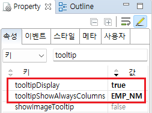
[소스 코드 예시]
<!-- gridView 의 소스 본문 예시 --> <w2:gridView tooltipShowAlwaysColumns="EMP_NM" tooltipDisplay="true" dataList="data:dlt_member" style="height: 100px;"> <!-- 중략 --> </w2:gridView>
tooltipDisplay
tooltipDisplayColumn
tooltipHeader
tooltipHeaderShowAlways
tooltipShowAlways
tooltipShowAlwaysColumns
[웹스퀘어5 SP5 개발 가이드] GridView
링크 : https://docs1.inswave.com/sp5_user_guide/bc10c1b82c9a2a0b#e1c4658baf7e726f
[웹스퀘어5 SP5 개발 가이드] GridView 툴팁
링크 : https://docs1.inswave.com/sp5_user_guide/86bdcf48029b958b#70fedd56725530ab
GridView 툴팁
링크 : https://youtu.be/Pb4R8a6wQOk
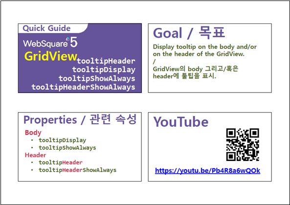